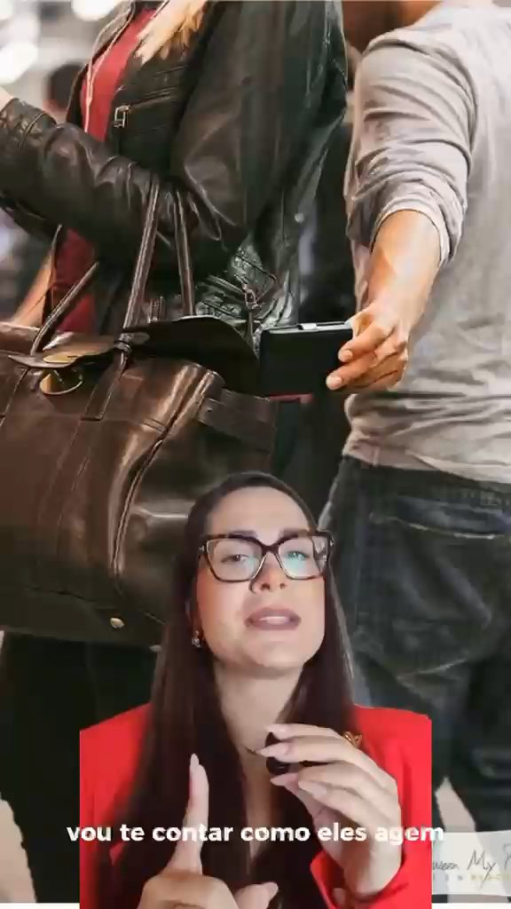
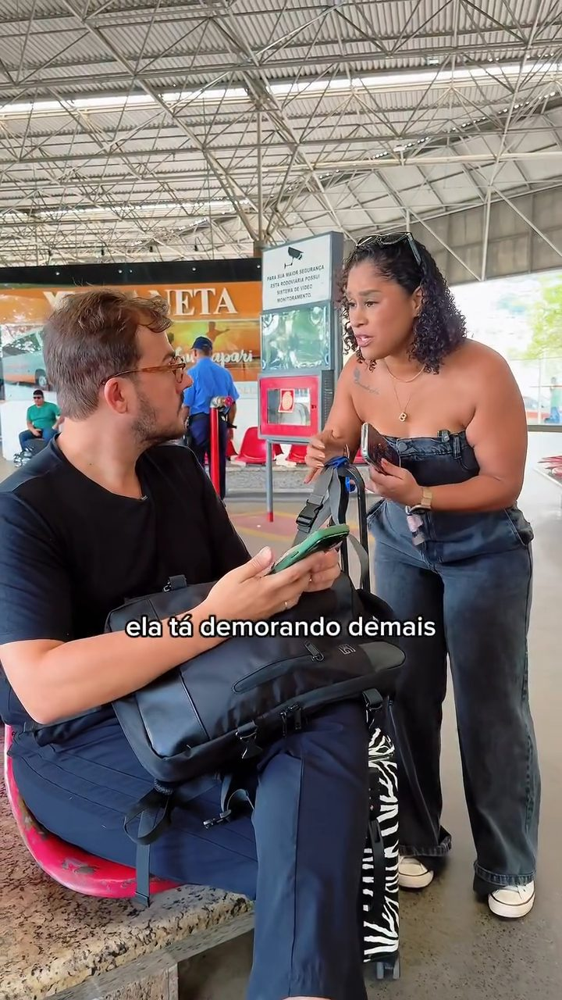
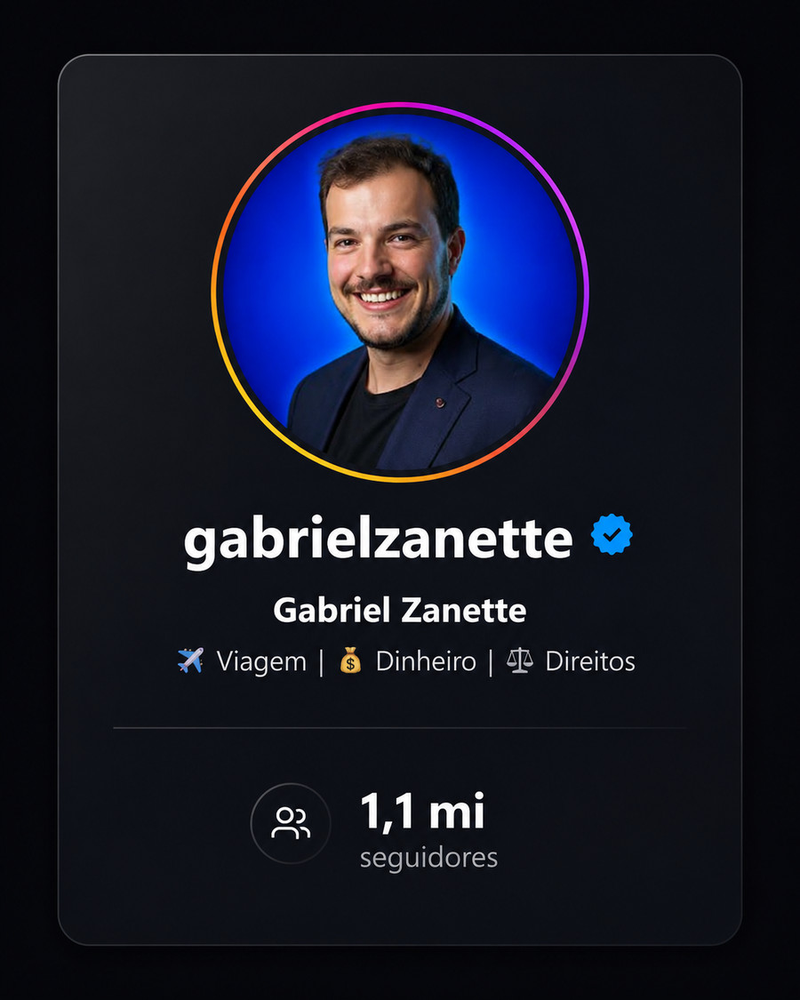

Gestão das redes
Planejamento, direção criativa, calendário, produção e acompanhamento para marcas em diferentes momentos.
- Linha Start
- Linha Premium
- Posicionamento
Estratégia, conteúdo e desenvolvimento de sites com uma direção visual própria — sem fórmulas prontas, sem estética genérica.
Roteiros autorais, atendimento próximo e experiências que começam antes do embarque.

EUROPA
Construímos presença digital para marcas que querem ser reconhecidas antes mesmo de serem explicadas.
A VZ conecta comunicação, direção criativa e tecnologia para a marca funcionar como um sistema — não como peças soltas.
O conteúdo chama atenção. O posicionamento cria sentido. O site organiza a decisão. Quando essas frentes conversam, a marca deixa de parecer improvisada.
Planejamento, direção criativa, calendário, produção e acompanhamento para marcas em diferentes momentos.
Ideias que cabem na linguagem da marca e ganham forma em vídeos, campanhas, roteiros e peças digitais.
Landing pages, sites empresariais e lojas online construídos para apresentar, conduzir e converter.
Antes de desenvolver, organizamos narrativa, hierarquia e direção visual. Você aprova o preview e só então o projeto vai para implementação.
Roteiros especiais para conhecer o mundo com segurança, cuidado e companhia.
Explorar roteiros ↗Orientação jurídica acessível, conteúdo prático e atendimento humanizado.
Conheça seus direitos ↗ VOO
VOOUma plataforma para organizar autoridade, conteúdos e oportunidades de parceria.
Ver conteúdos ↗
1,1 MIUma página com foco claro, narrativa objetiva e uma ação principal.
A presença oficial da empresa, com serviços, história, provas e contato.
Produtos, categorias e jornada de compra organizados para reduzir atrito.
Do primeiro alinhamento à entrega, cada decisão tem contexto, preview e espaço para aprovação.
Entendemos o negócio, o público, o momento e o objetivo real do projeto.
Definimos narrativa, referências, linguagem visual e caminho de execução.
Produzimos o conteúdo ou o preview do site com rodadas de aprovação.
Publicamos, testamos, acompanhamos e ajustamos a partir do que acontece.
Daniel e Rafaella participam da construção de cada projeto, conectando estratégia, criatividade, produção e tecnologia.

Organiza a direção dos projetos e transforma necessidades em soluções práticas, da estrutura do site à integração entre comunicação e tecnologia.

Conduz a identidade dos conteúdos, a construção das ideias e a forma como cada marca se apresenta e conversa com o público.
A VZ não me entrega “só” marketing, mas tudo o que sustenta o processo: dedicação, cuidado aos detalhes, escuta ativa e trabalho em equipe.
Eles viajam junto com as minhas ideias, são co-participativos, apresentam estratégias e trazem ideias novas. Eu recomendo demais.
O restante a gente resolve conversando.
Gestão de redes sociais, produção de conteúdo, produção audiovisual, landing pages, sites empresariais e lojas online. Também estruturamos projetos integrados.
A gestão de redes possui opções a partir de R$ 700 por mês. Projetos de site possuem opções a partir de R$ 1.200. O valor final depende do escopo.
Sim. Estratégia, acompanhamento e desenvolvimento podem acontecer remotamente. Produções presenciais são avaliadas conforme localização e necessidade.
Primeiro montamos a direção e o preview visual. Depois da sua aprovação, seguimos para o desenvolvimento, testes e entrega.
Conte o que você precisa. A gente organiza o caminho.
Começar um projeto ↗